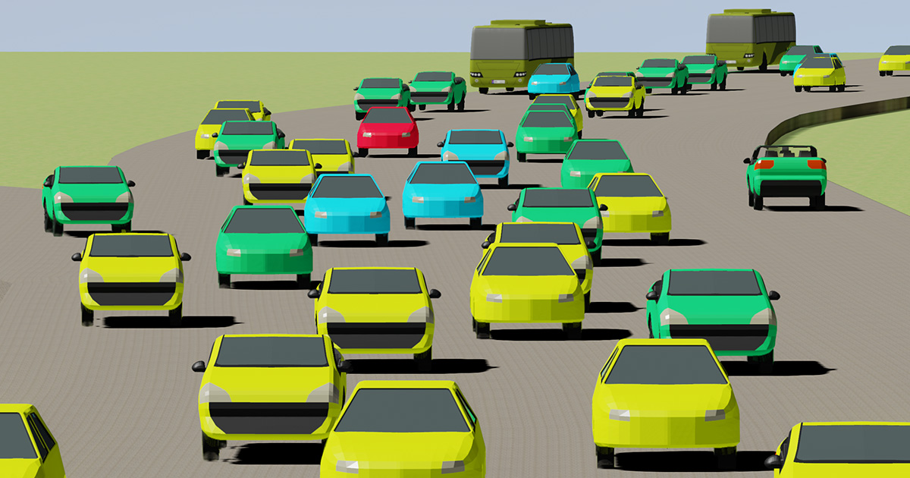

What would happen to road traffic if we removed lanes? In this project, we have investigated possible effects of automatic vehicles and removal of lanes. The goal of the project has been to increase the efficiency of already existing roads while at the same time reduce the costs of building new ones.
We have used steering behaviors to generate the behavior of the automatic vehicles and run multiple experiments to verify whether steering behaviors is indeed a viable option for future road traffic management. Most of our experiments have been done with asymmetric traffic loads (more cars in one direction than the other) since we believe asymmetric traffic holds the greatest potential for efficiency improvement. A typical goal for experimenting with asymmetric traffic is to remove the traffic jams that occurs during rush traffic. We have also performed experiments with symmetric traffic loads to verify that steering behaviors work with symmetric traffic as well.
Our results show that steering behaviors work with both symmetric and asymmetric road traffic, and the road throughput (measured in vehicles per hour) can be increased by 72% for asymmetric road traffic.
The road traffic is composed of 3 types of vehicles, personal cars, buses, and emergency vehicles. They all drive at different speeds, the bus is the largest vehicle, and the personal car and the emergency vehicle have the same size. The personal car is driving 60km/h, the bus 72km/h, and the emergency vehicle is driving 90km/h. The reason for having multiple different vehicles driving at different velocities is that we wanted to show how flocking would work with diverse traffic. The 72% increase in throughput was achieved with diverse asymmetric traffic. We only tested symmetric traffic with the personal cars. The throughput increase for the symmetric traffic was 56%. We do believe that some of the throughput increase is due to automatic vehicles being more effective than human drivers, and not solely the achievement of flocking alone.
For implementing the simulations we have used Unreal Engine 4. We created a roughly 400m long road segment with curves where we had vehicles driving in both directions. The personal cars had to avoid each other, yield to emergency vehicles, yield to buses, and of course, remain on the road the whole time. We also implemented an entrance ramp and demonstrated that steering behaviors can handle merging traffic.
This project is the result of a master's project by Sindre Ilebekk Johansen (@sindreij) and Andreas Sløgedal Løvland (@andrlov), and has been a joint effort of the Norwegian University of Science and Technology and The Norwegian Public Roads Administration.